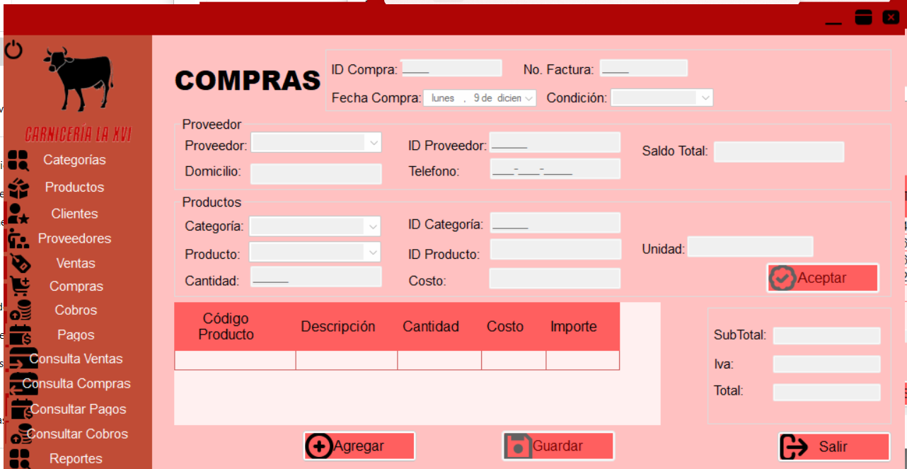

El módulo de Compras en nuestro sistema te permite gestionar de manera eficiente todas las transacciones relacionadas con las compras de tus productos. Desde aquí puedes registrar nuevas compras.
Si eso pasa, solo vuelve a seleccionar el producto en la zona de productos y agrega la cantidad que hizo falta.
Selecciona la opción de "Crédito" además de seleccionar la fecha límite de pago.
Desplázate hasta al final en la esquina inferior derecha verás que hay un botón que dice "Salir", dale clic y te llevará directamente al menú principal.